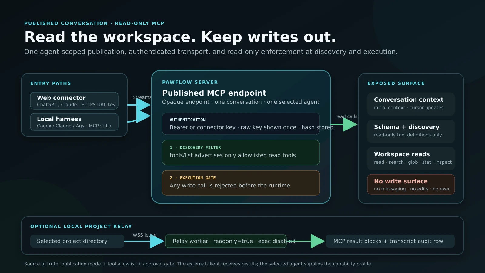

Agent routing, work state, delegation, continuations
Choose the tool that owns the job
Objective: keep agents from treating similar-looking tools as interchangeable. PawFlow gives each kind of context, delegation, orchestration, and waiting a distinct owner.
Delegate deliberatelydelegate talks to an existing conversation agent; flash_delegate creates disposable parallel workers; consult_agent is a tool-free one-shot second opinion; a2a calls a configured remote agent.
Track the right worktodolist is the current agent's unfinished-work ledger. Plans add approval, steps, assignment, and verification. assign_task runs a predefined autonomous job. Flows make repeatable work deterministic.
Resume instead of pollingUse Monitor for a short blocking command, schedule_continuation to end the turn and resume long work, and ScheduleWakeup for a future or recurring check.
Keep state scopedFacts belong in memory, relationships in the KG, agent lessons in the diary, unfinished work in todo, temporary evidence in scratchpad, and project structure/knowledge in the relay-scoped graph and wiki.
PawFlow injects a compact selection map containing only tools available to the active agent. The agent can then call get_tool_schema(family="delegation") for an on-demand comparison and get_tool_schema(tool_name="delegate") for exact parameters. The full technical decision map also covers search/read/edit tools, artifacts, notifications, resources, packages, skills, tasks, and flows.
Run the release installer and reach the first conversation
Objective: show the full first-run path from the shell script to the PawFlow conversation screen with assistant selected.
1. Download the release zip, unzip it, and run scripts/install-pawflow.sh.Video: install script, browser wizard, and first chat.
terminal
Loading current release command...
Gateway screenOpen https://localhost:19990/install, accept the local certificate for private installs, enter the bootstrap key, then replace it with your real Private Gateway key.
Admin screenCreate the first admin account. This user owns the initial runtime resources and can configure global agents/services.
LLM provider screenSelect the first provider: Codex interactive, Claude Code interactive, Antigravity/Agy, Gemini CLI, Anthropic, OpenAI, or an OpenAI-compatible endpoint. Codex app-server and Claude Code `cc -p` are legacy choices for existing configurations only.
Summarizer screenChoose the summarizer service and context limits so compaction is explicit and does not flood provider context.
Runtime screenDeploy the main PawFlow Agent flow: httpReceiver to agentLoop to handleHTTPResponse.
Conversation screenOpen the starter conversation, confirm assistant is selected, send a small prompt, and verify streaming output.
Gateway and bootstrap key.Admin account.LLM service.First conversation.
PawFlow runs on the selected port, the wizard is complete, and the first conversation can call your chosen provider.
Published conversation, stdio, CC, Codex, Agy/Gemini, OpenCode, JCode, Pi, Hermes
Install a published PawFlow conversation as a local MCP server
Objective: bind one Claude Code, Codex, Agy/Gemini, OpenCode, JCode, Pi, Hermes, or generic MCP client instance to exactly one PawFlow conversation and agent, while allowing other agents in that conversation to have independent MCP publications.
ChatGPT inspects the current MyWorkspace commits through a read-only PawFlow MCP session.

Read-only publications remove write tools during discovery and reject write calls again before execution.
WindowsDownload the ZIP, extract it, then run install.cmd or powershell -ExecutionPolicy Bypass -File .\install.ps1.
Linux and macOSExtract either archive, enter its directory, then run ./install.sh.
IsolationThe installer never changes global harness settings. It creates one private session bundle and prints the command that must launch that instance.
ConcurrencyEach published agent accepts one active client instance. Publish another attached agent from the same conversation for an independent endpoint, key set, lease, and terminal.
Open the target conversation, then Resources → MCP Repository → Publish/configure this conversation.
Select the attached agent, create an API key, and copy the endpoint and key immediately. Repeat with another attached agent when it needs its own publication.
Extract the client archive and run the installer for the current OS.
Enter a unique session name, endpoint, hidden API key, optional hidden gateway key, local project directory, and a comma-separated client subset from cc, codex, agy, opencode, jcode, pi, and hermes.
Choose read-only or read/write access and whether shell execution is allowed. The secure default leaves shell execution disabled.
Start the client with the session-bound command printed by the installer, confirm the MCP server is listed, then call pawflow_relay_status. It must report auto_default: false.
For any other MCP-compatible stdio client, use the generated mcp.json or entry.json in a dedicated client profile. Never merge it into a shared global profile: one local process must load one PawFlow session bundle.
Embed a published agent in your own app with AG-UI
Objective: drive a PawFlow agent from any AG-UI client — CopilotKit and the wider AG-UI ecosystem — with streaming runs, frontend tools, shared state, and interrupts.
Publish the agent once: Resources → A2A → publish, create a Bearer key. The same publication serves A2A and AG-UI.
Point the AG-UI client at POST https://your-server/agui/{publication_id} with the Bearer key. A GET on the same URL returns the descriptor and its capabilities.
Each AG-UI threadId becomes a durable server-side conversation (isolated context policy): the client can send full history, PawFlow only consumes what is new.
Declare frontend tools in RunAgentInput.tools: the agent calls them by name, the call streams as TOOL_CALL_*, your app executes it and returns the result as a role:"tool" message in the next run.
Use shared state for live UI sync: state seeds the document, every run opens with STATE_SNAPSHOT, and the agent's agui_state tool streams STATE_DELTA patches while it works.
For approvals, the agent raises an interrupt (agui_interrupt): the run finishes with an interrupt outcome and your app answers through resume.
One publish action, three protocols: MCP for tools, A2A for agent-to-agent, AG-UI for your user-facing app.
Use a relay desktop with noVNC, audio, screen, and see
Objective: explain the operator view and the agent-visible tools for desktop work. This applies to any relay running a desktop-capable image — server relay, remote Relay CLI, or Relay Desktop alike.
Desktop (VNC): noVNC opens the relay desktop in the browser.Audio only: stream the relay's sound without opening a desktop.Video: a text-only agent inspects the desktop through delegated vision, then acts through approved tools.
Connect any relay whose image ships the virtual desktop (server relay, remote Relay CLI, or Relay Desktop); for a local GUI session, install Relay Desktop on the workstation that owns it.
Open Desktop from the webchat workspace menu and choose the relay's virtual desktop, or the local desktop when allow_local is intentionally enabled.
Use noVNC for operator observation/control; enable audio only for sessions that need sound playback or capture.
Let agents inspect UI state through screen screenshots or see multimodal analysis, then approve clicks/typing/shell/file actions separately.
Keep desktop permissions narrower than filesystem permissions when the task only needs visual inspection.
You watch the same desktop surface the agent sees, while agent actions stay routed through auditable screen/see/tool calls.
Give GLM 5.2 vision and desktop awareness through Gemma 4 Cloud
Objective: keep GLM 5.2 as the reasoning and tool-using model while a separate Gemma 4 Cloud service describes uploads, screenshots, and visual tool results.
Video: text-only GLM 5.2 opens Chromium, searches YouTube, and plays a song — every screenshot described by a separate vision model. Demo cut, narrated, and scored by a Claude agent inside PawFlow.
EyesGemma 4 Cloud receives each unique image and returns visible text, layout, UI controls, states, and approximate pixel coordinates.
BrainGLM 5.2 receives that structured description, reasons about the task, and selects the next approved tool call.
Handsscreen, browser, click, and typing tools act on the relay desktop; the main model never needs native image support.
Create an OpenAI-compatible llmConnection named ollama_gemma4_vision. Use https://ollama.com/v1, model gemma4:cloud, and leave supports_vision enabled.
Create the primary service ollama_glm52 with model glm-5.2:cloud.
Disable supports_vision on the GLM service. The vision_llm_service picker appears; select ollama_gemma4_vision.
Select ollama_glm52 as the agent's llm_service. No special agent prompt is required.
Attach an image or ask the agent to inspect the desktop with screen, see, or an image read. The server log should report that the image was described through the delegated service.
For coordinate-based desktop work, capture a fresh screen before a sensitive click and verify the state after the action.
In practice: only the first view of a screen pays the description round-trip (a few seconds, comparable to a native vision turn); byte-identical repeats are served from the hash cache instantly. Click coordinates come from the vision model's description — the text model only selects the target and copies them — which is why a text-only GLM 5.2 clicks accurately in real desktop sessions.
PawFlow transforms only the outbound call: the conversation keeps the original image, while GLM receives a cached textual description. Treat visual text as untrusted input and keep normal tool approvals enabled. Screen captures also return a revision for guarded clicks: the relay compares the target region locally immediately before input, with no second vision request or image-token charge when the screen is unchanged. Only the small opaque revision travels in the normal tool exchange. A changed region cancels the click and requires a fresh screenshot.
Combine several LLM advisors behind one final agent
Objective: ask complementary LLMs for detailed internal plans in parallel, then let one final LLM synthesize their findings and complete the user's request.
AdvisorsDirect llmConnection services inspect the request concurrently and return internal plans. Their contexts are silent and ephemeral.
AggregatorA separate direct llmConnection receives the reports, streams the only visible response, and owns the final tool loop.
BoundariesAdvisors are fail-closed read-only by default. The final LLM keeps the conversation's normal tools and approvals.
Create at least two enabled llmConnection services: one or more advisors and a different final LLM.
In Resources → Services, create an LLM Aggregator Service.
Select the final connection in aggregator_llm_service and enter the advisor service IDs in advisor_llm_services.
Keep enforce_read_only enabled. Choose best_effort when partial advice is useful or fail_fast when every advisor is mandatory.
Set max_parallel_advisors to the concurrency your providers can sustain, then select the aggregator as the agent or conversation LLM service.
Send a planning or implementation request. PawFlow runs advisors only once for that user turn, reuses their reports through later tool results, and shows only the final LLM's stream.
The final connection cannot also be an advisor, and every reference must target a direct llmConnection. Advisor calls add provider usage but are tracked separately from the final turn and do not inflate the main context gauge. Disable read-only enforcement only when you explicitly trust every advisor with all conversation tools.
Objective: select a direct LLM connection once per turn, retain it through tool iterations, and cold-handoff safely after a classified provider failure.
Immutable turn planordered, round_robin, sticky_round_robin, and least_recently_used select exact scoped candidates without rotating mid-turn.
Current stateDuring AgentLoop work, PawFlow flushes persisted messages and cold-starts the next provider from the latest conversation context.
Safe boundariesCancel and force stop never alter route health. PawFlow reports one sanitized error only after all planned candidates fail.
Create and test at least two enabled direct llmConnection services.
In Resources → Services, create an Adaptive LLM Router.
Add candidates with the structured editor, set priority and enabled state, then choose a strategy.
Select the new llmRouter as the agent or conversation LLM service.
Use Health and Explain last decision for sanitized diagnostics.
Test with one provider unavailable; persisted work remains in the cold-started child context.
If PawFlow cannot confirm that queued conversation writes are durable, it stops instead of handing an incomplete context to the next provider. Health and decision details are bounded and secret-free.
Download the PawCode asset matching the release version shown above.
Install the package or unzip it into a directory on PATH.
Run PawCode, point it at the PawFlow server, and authenticate with the same user.
Select an existing conversation or create a new one; relays, memories, and tool policies stay server-side.
Terminal work and webchat share the same PawFlow conversation.
PawCode usage
Start PawCode with explicit server and Private Gateway settings
Objective: make the terminal client predictable across localhost, private deployments, and gateway-protected routes.
Set the server URL once, then login and resume shared conversations.Video: server URL, Private Gateway key, login, resume, and run a relay-backed command.PawCode in a terminal: live thinking, tool calls, and streaming responses over the same backend.
terminal
# Local server
PAWFLOW_SERVER="https://localhost:19990" pawcode --dir .
# Gateway-protected server
PAWFLOW_SERVER="https://pawflow.example.com" \
PAWFLOW_GATEWAY_KEY="your-private-gateway-key" \
pawcode --dir .
# Common flow after login
pawcode auth login
pawcode --dir .
Use PAWFLOW_SERVER for the exact PawFlow origin, including scheme and port.
Use PAWFLOW_GATEWAY_KEY when Private Gateway protects API/SSE routes; keep it in your shell profile or secret manager, not in prompts.
Run pawcode auth login if the browser auth token is missing or expired.
Use /conv and /resume <id> to continue webchat conversations.
Use /new --agent assistant --llm <service> --relay <relay_id> when creating a terminal-first conversation with an existing relay binding.
PawCode connects to the chosen server, passes Private Gateway, and uses the same relay and tool permissions as webchat.
Install the PawFlow VS Code extension from a release VSIX
Objective: make the VS Code client installable without opening the extension source folder or running a development host.
Install the release .vsix, configure the server URL, then login.Video: install from VSIX, settings, login, chat sidebar, selection actions.The PawFlow panel in VS Code: chat, conversations, files, tools, and live streaming over the same backend.
Objective: move a running deployment to a new release without opening a terminal.
Open Admin → Update server. A read-only preflight reports the deployment, the target image, and how many agent turns are in flight.
Confirm: a restart kills every running turn, and the dialog says so before anything happens.
The update runs in a throw-away `pawflow-updater` container, which keeps its logs if it fails.
The page waits for a different server process to answer `/health`, then reloads on the new version.
If the server never restarts, the panel names which failure happened and prints `docker logs pawflow-updater`. The command line stays available: `bash scripts/install-pawflow.sh --check-updates`.
Objective: run a full relay on the PawFlow server itself, so agents get filesystem, shell, and tool access to server-side workspaces — the pure remote self-hosted setup — and client relays can register against it.
Install PawFlow and complete the first-run wizard.
Open resources/services and add a `relay` service.
Leave `token` empty for a managed server relay.
Save and confirm health before attaching client relays.
Agents work directly in server-side workspaces, and PawFlow brokers filesystem, shell, screen, browser, and desktop-capable clients.
Objective: connect the assistant to Codex interactive, Claude Code interactive, Antigravity/Agy, Gemini CLI, Anthropic, OpenAI, or a compatible endpoint.
Create or select an LLM service in the installer/resource panel.
Use direct `openai`/`anthropic` for API keys, `codex-interactive` for Codex subscriptions, `claude-code-interactive` for Claude subscriptions, and `antigravity-interactive` for Gemini subscriptions. Codex interactive reuses the existing Codex OAuth pool.
Do not select the legacy `codex-app-server` or Claude Code `cc -p` agent transports for a new service; keep them only while migrating an existing configuration.
Set credentials through secrets or the matching OAuth credential provider.
Send a small inspection task before allowing edits or shell.
You get streaming responses from the selected provider.
Objective: keep the native CLI ecosystem inside PawFlow sessions — OpenAI's curated Codex plugins (Linear, GitHub, Gmail, Calendar...) and Claude Code plugin marketplaces.
Open your recommended `codex-interactive` LLM service and set `codex_plugins` to a comma-separated list, e.g. `github,linear,gmail` (OAuth/subscription mode — plugins are authorized at the ChatGPT account level). Existing legacy `codex-app-server` services keep the same parameter while they are migrated.
For Claude Code interactive, declare marketplaces in `claude_marketplaces` (`name=owner/repo` or `name=git-url`) and list `claude_plugins` as `plugin@marketplace` ids; Claude Code auto-installs them at session start.
Gemini CLI extensions: install once inside the persistent session slot (`gemini extensions install <git-url>`) — the slot survives restarts.
Remove an entry from the service to disable it on the next session.
PawFlow runs the real CLI engines, so plugin commands, skills, and connectors behave exactly as in the native CLI.
Objective: keep stable logical names while credentials remain encrypted locally or owned by an external vault.
Create a normal local secret, or add a secretProvider service for AWS Secrets Manager/SSM, HashiCorp Vault, Azure Key Vault, Google Cloud Secret Manager, or Keeper.
Bind the logical secret name to the exact provider entry. PawFlow stores the encrypted locator, not the remote value.
Reference the same name from expressions, services, packages, shell tools, and scripts; consumers do not need to know which provider owns it.
Set a conversation allowlist and, when needed, a narrower per-agent allowlist. Their intersection is the effective secret set.
Remote values are read-only, cached only in memory for a bounded TTL, and fail closed without lower-scope fallback. The first delivery uses the normal service surface plus authenticated management actions; a dedicated binding editor remains follow-up work.
Objective: turn hard-won procedures into a curated, growing skill library.
Work normally: agents are instructed to crystallize novel multi-step procedures into conversation-scoped skills, and to fix a skill whose instructions proved wrong during use.
Review `skill-draft` memories proposed after compaction; ask the agent to create the skill when a procedure recurs.
Accept scope promotion when a conversation skill is loaded repeatedly — the agent asks, you decide.
Schedule the `skillCurator` flow task (with a cron trigger) to get periodic keep/archive/merge reports based on real usage stats.
The library improves from real work; nothing is archived or promoted without your confirmation.
Objective: give long-running agent work explicit structure, frozen dependencies, inspectable progress, and safe recovery without changing existing LLM agents by default.
Workflow Agents, exact v2 resource bindings, and bounded groups are available without feature flags or a restart.
In Resources or the conversation agent dialog, create a Workflow Agent and select an exact compatible Flow version. Bind every required LLM, relay, parameter, and resource; optional services may remain explicitly disabled.
Set finite turn, task, token, cost, and deadline limits plus the intended preemption policy. Save only after server validation accepts the complete binding.
Send a canary turn, then use the agent menu to list and inspect durable runs. Retry only when PawFlow marks the current generation recoverable; a conflict means inspect rather than creating a replacement run.
For collaboration, use the reviewed group-deliberation Flow with concrete member agents and independent tool policies. The group workflow coordinates contributions; it does not combine member permissions.
The existing LLM and external-agent paths remain unchanged while the workflow runtime exposes checkpoints, lifecycle events, usage, backlog health, and explicit recovery.
Objective: review exactly what will run while keeping authoring, approval, execution, and human input durable across clients and restarts.
Ask the planner for a workflow. PawFlow creates a canonical Flow draft and a proposal that references its exact revision; the proposal is review metadata, never a second executable format.
Inspect the technical or declarative view, functional frames, labels, descriptions, routes, permissions, bindings, and expected effects. Editing creates a new revision instead of mutating the accepted one.
Accept the reviewed revision, then approve it to publish one immutable Flow version and start one durable one-shot FlowRun.
Answer typed questions and confirmations from Web, PawCode, or VS Code. Every client renders the same server-owned surface, and the server validates actor, revision, schema, and prepared-call digest before resuming.
Inspect the linked proposal and run history for checkpoints, waits, child agents, terminal state, and replay lineage. Replays create a fresh authorized run rather than reopening completed execution.
The capability and PlanStore cutover are disabled by default. Operators must enable the five flags in the documented order, preserve a single writer, and respect the irreversible first-write rollback fence.
Objective: use a Telegram bot as a first-class client for the shared agent runtime, with the same durable conversations, agents, and tools as web chat and PawCode.
Create a bot with @BotFather and copy the bot token.
Store the token as a secret, then add a telegramBot service that references it. Set allowed_users to the Telegram user IDs you trust.
Deploy the Telegram agent flow: telegramReceiver ingests messages and telegramAgentClient submits them through the shared agent API. Add telegramConversationBridge to mirror live conversation events back to the chat.
Link your Telegram account to a PawFlow user from account settings, so messages run under your identity, scope, and permissions.
Message the bot: text, documents, photos, and voice are accepted. Use /new to start a conversation, /conv to switch, /tts for spoken replies, and /help for commands; slash commands mirror into the conversation.
The same agents, multi-agent context, attachments, and FileStore outputs are available from Telegram, with responses streamed back to the chat.
Add a server profile: a label, the server's HTTPS origin, and its private gateway key. Keys are encrypted with an AES-GCM key held in Android Keystore; cleartext HTTP is rejected.
Select the server and sign in with native controls: built-in credentials post directly to the server, OAuth2 providers open in a Custom Tab and return through a PKCE-bound handoff — the session token never travels in the callback.
Chat in native tabs: + opens another webchat tab, numbered tabs switch without reloading, × closes one, and Servers returns to the selector without logging out. The toolbar and tab strip fold away behind a right-edge grip so the chat gets the whole screen.
Files the webchat offers (agent-shared files, exports) download through the system DownloadManager with your session, landing in Downloads with a notification.
Every tab shares the server login and keeps its own history; Android Back walks the active WebView history before returning to the selector.
Objective: store a conversation as ciphertext on disk so a stopped server reveals nothing.
In the conversation, run /encrypt on and set a passphrase (with confirmation). Existing content is migrated to ciphertext.
Optionally add a recovery passphrase with /encrypt escrow on, or bind a trusted relay for unattended unlock with /encrypt relay <pubkey> (from pawflow-relay key export-pubkey).
The conversation locks on logout, 15-minute idle, or server restart; reopen it and run /encrypt unlock (or it auto-unlocks via a connected trusted relay).
To encrypt a conv-scoped relay workspace too, run /relay encrypt <id> on.
Message content and tool I/O are unreadable on disk without the passphrase; metadata and other conversations are unaffected.
Objective: give each piece of context the correct owner and lifetime.
Use remember for durable facts and preferences; use the Knowledge Graph when the fact is a clear subject–relationship–object triple.
Use diary_write for the agent's durable first-person decisions, lessons, recurring failures, and reflections — not routine turn summaries.
Use todolist as the authoritative ledger for unfinished multi-step or deferred work.
Use scratchpad for expiring evidence, hypotheses, local decisions, and resume cues. Only topics/count/expiry enter context; the agent explicitly retrieves note bodies.
Use Project Graph and Project Wiki for relay-scoped code structure and sourced architecture shared by every conversation on that project.
The model receives a canonical routing hint, while each tool schema provides the exact actions and parameters.
Objective: follow a working agent without scrolling through every technical row.
New conversations open in Simplified: your message, one live activity block, then the turn's last message under it.
Expand the block for Messages, Thinking, Tool calls, and Artifacts; the header counts the turn's seconds and freezes on what it took.
Switch to Classic from the View menu for the flat transcript, with the grouping toggles for technical, task, and delegate rows.
Or pick Openspace: a live 3D office where each agent sits at a desk — speech and thought bubbles mirror the stream, status orbiters circle the agents (🧠 thinking, 🔧 tool runs, 💤 idle), battery gauges show context use, a wall screen projects the live transcript, wall posters open every side panel (cognitive tools, todo, cost, context, plans, scheduled tasks, file explorer, desktop, terminal, tmux), a FileStore TV plays the conversation's media files, and the flows poster projects deployed flows on a 3D stage with animated dataflow.
The choice is stored per conversation, so one can read simplified while another stays classic or openspace.
Long turns stay readable while the full record remains one click away.
Objective: let agents run reviewed ComfyUI graphs without exposing arbitrary workflows or loading large outputs into server memory.
From a mobile PawFlow conversation, the agent drives ComfyUI on a Windows relay, waits for the render, validates it, and returns the finished video.
Install ComfyUI from its official manual/desktop instructions, install the required models and custom nodes, then verify http://127.0.0.1:8188/system_stats. ComfyUI has no official Docker image; community images remain operator-managed.
Run and test each graph in ComfyUI. End it in an artifact-producing save/combine node, then use File → Export Workflow (API), not the ordinary Save JSON.
In PawFlow Resources → Services, add comfyUIImageGeneration or comfyUIVideoGeneration.
For ComfyUI on the relay host, keep base_url=relay://${conv.relay}/localhost:8188 and relay_local=true. Set relay_local=false only when ComfyUI runs in the relay container.
Paste trusted presets in workflows. Each operation contains the complete API workflow, explicit bindings such as prompt -> 6.text, and an explicit output such as node 9, key images, index 0.
Configure only the operations the graph supports: generate/edit_image for images; generate, image_to_video, frame_to_video, reference_to_video, video_edit, or video_extend for video.
Generate a small artifact, confirm a FileStore/relay-file result, then tune time and byte limits. Keep port 8188 private or place authenticated TLS in front of it.
PawFlow uploads declared inputs, submits only the configured graph, polls prompt history, and streams the selected artifact to disk.
Objective: hold a full-duplex spoken conversation — you talk, the agent answers in its own voice, you can interrupt it, and the transcript lands in the conversation.
Add a `realtimeVoiceConnection` service: pick `openai_realtime` (references an `openai` LLM service, model `gpt-realtime`) or `gemini_live` (references a `gemini` LLM service with its `api_key` set, a Live-capable model).
Optionally set `voice`, `vad` (`server` auto-detection or `manual` push-to-talk), `tool_profile` for spoken tool use, and `context_mode` so the agent knows what was already discussed.
Click the microphone button in the webchat input row — right-click it to pick between services. Speak; barge in whenever you want.
Pin the service on an agent ("Realtime voice service" in the agent editor) to make it voice-native: on Telegram, voice notes to that agent get voice-note replies in the same voice.
Both transcripts persist as normal messages, so the text agent resumes with full context after the call.